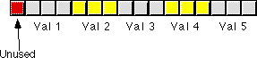

|
Table of Content | Chapter Nine (Part 8) |
|
Table of Content | Chapter Nine (Part 8) |
| CHAPTER
NINE: ARITHMETIC AND LOGICAL OPERATIONS (Part 7) |
|
| 9.6 -
Masking Operations 9.6.1 - Masking Operations with the AND Instruction 9.6.2 - Masking Operations with the OR Instruction 9.7 - Packing and Unpacking Data Types |
9.8 -
Tables 9.8.1 - Function Computation via Table Look Up 9.8.2 - Domain Conditioning 9.8.3 - Generating Tables |
| 9.6 Masking Operations | |
A mask is a value used to force certain bits to zero or one within some other value. A mask typically affects certain bits in an operand (forcing them to zero or one) and leaves other bits unaffected. The appropriate use of masks allows you to extract bits from a value, insert bits into a value, and pack or unpacked a packed data type. The following sections describe these operations in detail.
9.6.1 Masking Operations with the AND Instruction
If you'll take a look at the truth table for the and
operation back in Chapter One, you'll note that if you fix either operand at zero the
result is always zero. If you set that operand to one, the result is always the value of
the other operand. We can use this property of the and instruction to
selectively force certain bits to zero in a value without affecting other bits. This is
called masking out bits.
As an example, consider the ASCII codes for the digits
"0".."9". Their codes fall in the range 30h..39h respectively. To
convert an ASCII digit to its corresponding numeric value, you must subtract 30h from the
ASCII code. This is easily accomplished by logically anding the value with 0Fh. This
strips (sets to zero) all but the L.O. four bits producing the numeric value. You could
have used the subtract instruction, but most people use the and instruction
for this purpose.
9.6.2 Masking Operations with the OR Instruction
Much as you can use the and instruction to
force selected bits to zero, you can use the or instruction to force selected
bits to one. This operation is called masking in bits.
Remember the masking out operation described earlier with
the and instruction? In that example we wanted to convert an ASCII code for a
digit to its numeric equivalent. You can use the or instruction to reverse
this process. That is, convert a numeric value in the range 0..9 to the ASCII code for the
corresponding digit, i.e., '0'..'9'. To do this, logically or the specified numeric value
with 30h.
One of the primary uses of the shift and rotate instructions is packing and unpacking data. Byte and word data types are chosen more often than any other since the 80x86 supports these two data sizes with hardware. If you don't need exactly eight or 16 bits, using a byte or word to hold your data might be wasteful. By packing data, you may be able to reduce memory requirements for your data by inserting two or more values into a single byte or word. The cost for this reduction in memory use is lower performance. It takes time to pack and unpack the data. Nevertheless, for applications that aren't speed critical (or for those portions of the application that aren't speed critical), the memory savings might justify the use of packed data.
The data type that offers the most savings when using packing techniques is the boolean data type. To represent true or false requires a single bit. Therefore, up to eight different boolean values can be packed into a single byte. This represents an 8:1 compression ratio, therefore, a packed array of boolean values requires only one-eighth the space of an equivalent unpacked array (where each boolean variable consumes one byte). For example, the Pascal array
B:packed array[0..31] of boolean; requires only four bytes when packed one value per bit. When packed one value per byte, this array requires 32 bytes.
Dealing with a packed boolean array requires two operations. You'll need to insert a value into a packed variable (often called a packed field) and you'll need to extract a value from a packed field.
To insert a value into a packed boolean array, you must
align the source bit with its position in the destination operand and then store that bit
into the destination operand. You can do this with a sequence of and, or,
and shift instructions. The first step is to mask out the corresponding bit in the
destination operand. Use an and instruction for this. Then the source operand
is shifted so that it is aligned with the destination position, finally the source operand
is or'd into the destination operand. For example, if you want to insert bit zero of the ax
register into bit five of the cx register, the following code could be
used:
and cl, 0DFh ;Clear bit five (the destination bit)
and al, 1 ;Clear all AL bits except the src bit.
ror al, 1 ;Move to bit 7
shr al, 1 ;Move to bit 6
shr al, 1 ;move to bit 5
or cl, al
This code is somewhat tricky. It rotates the data to the right rather than shifting it to the left since this requires fewer shifts and rotate instructions.
To extract a boolean value, you simply reverse this
process. First, you move the desired bit into bit zero and then mask out all the other
bits. For example, to extract the data in bit five of the cx register leaving
the single boolean value in bit zero of the ax register, you'd use the
following code:
mov al, cl
shl al, 1 ;Bit 5 to bit 6
shl al, 1 ;Bit 6 to bit 7
rol al, 1 ;Bit 7 to bit 0
and ax, 1 ;Clear all bits except 0
To test a boolean variable in a packed array you needn't extract the bit and then test it, you can test it in place. For example, to test the value in bit five to see if it is zero or one, the following code could be used:
test cl, 00100000b
jnz BitIsSet
Other types of packed data can be handled in a similar fashion except you need to work with two or more bits. For example, suppose you've packed five different three bit fields into a sixteen bit value as shown below:

If the ax register contains the data to pack
into value3, you could use the following code to insert this data into field
three:
mov ah, al ;Do a shl by 8
shr ax, 1 ;Reposition down to bits 6..8
shr ax, 1
and ax, 11100000b ;Strip undesired bits
and DATA, 0FE3Fh ;Set destination field to zero.
or DATA, ax ;Merge new data into field.
Extraction is handled in a similar fashion. First you strip the unneeded bits and then you justify the result:
mov ax, DATA
and ax, 1Ch
shr ax, 1
shr ax, 1
shr ax, 1
shr ax, 1
shr ax, 1
shr ax, 1
This code can be improved by using the following code sequence:
mov ax, DATA
shl ax, 1
shl ax, 1
mov al, ah
and ax, 07h
Additional uses for packed data will be explored throughout this book.
The term "table" has different meanings to different programmers. To most assembly language programmers, a table is nothing more than an array that is initialized with some data. The assembly language programmer often uses tables to compute complex or otherwise slow functions. Many very high level languages (e.g., SNOBOL4 and Icon) directly support a table data type. Tables in these languages are essentially arrays whose elements you can access with an non-integer value (e.g., floating point, string, or any other data type). In this section, we will adopt the assembly language programmer's view of tables.
A Table is an array containing preinitialized values that do not change during the execution of the program. A table can be compared to an array in the same way an integer constant can be compared to an integer variable. In assembly language, you can use tables for a variety of purposes: computing functions, controlling program flow, or simply "looking things up". In general, tables provide a fast mechanism for performing some operation at the expense of some space in your program (the extra space holds the tabular data). In the following sections we'll explore some of the many possible uses of tables in an assembly language program.
9.8.1 Function Computation via Table Look Up
Tables can do all kinds of things in assembly language. In HLLs, like Pascal, it's real easy to create a formula which computes some value. A simple looking arithmetic expression is equivalent to a considerable amount of 80x86 assembly language code. Assembly language programmers tend to compute many values via table look up rather than through the execution of some function. This has the advantage of being easier, and often more efficient as well. Consider the following Pascal statement:
if (character >= 'a') and (character <= 'z') then character := chr(ord(character) - 32);
This Pascal if statement converts the
character variable character from lower case to upper case if character is in the range
'a'..'z'. The 80x86 assembly language code that does the same thing is
mov al, character
cmp al, 'a'
jb NotLower
cmp al, 'z'
ja NotLower
and al, 05fh ;Same operation as SUB AL,32
NotLower: mov character, al
Had you buried this code in a nested loop, you'd be hard pressed to improve the speed of this code without using a table look up. Using a table look up, however, allows you to reduce this sequence of instructions to just four instructions:
mov al, character
lea bx, CnvrtLower
xlat
mov character, al
CnvrtLower is a 256-byte table which contains the values 0..60h at indices 0..60h, 41h..5Ah at indices 61h..7Ah, and 7Bh..0FFh at indices 7Bh..0FFh. Often, using this table look up facility will increase the speed of your code.
As the complexity of the function increases, the performance benefits of the table look up method increase dramatically. While you would almost never use a look up table to convert lower case to upper case, consider what happens if you want to swap cases:
Via computation:
mov al, character
cmp al, 'a'
jb NotLower
cmp al, 'z'
ja NotLower
and al, 05fh
jmp ConvertDone
NotLower: cmp al, 'A'
jb ConvertDone
cmp al, 'Z'
ja ConvertDone
or al, 20h
ConvertDone:
mov character, al
The table look up code to compute this same function is:
mov al, character
lea bx, SwapUL
xlat
mov character, al
As you can see, when computing a function via table look up, no matter what the function is, only the table changes, not the code doing the look up.
Table look ups suffer from one major problem - functions computed via table look ups have a limited domain. The domain of a function is the set of possible input values (parameters) it will accept. For example, the upper/lower case conversion functions above have the 256-character ASCII character set as their domain.
A function such as SIN or COS accepts the set of real numbers as possible input values. Clearly the domain for SIN and COS is much larger than for the upper/lower case conversion function. If you are going to do computations via table look up, you must limit the domain of a function to a small set. This is because each element in the domain of a function requires an entry in the look up table. You won't find it very practical to implement a function via table look up whose domain the set of real numbers.
Most look up tables are quite small, usually 10 to 128 entries. Rarely do look up tables grow beyond 1,000 entries. Most programmers don't have the patience to create (and verify the correctness) of a 1,000 entry table.
Another limitation of functions based on look up tables is that the elements in the domain of the function must be fairly contiguous. Table look ups take the input value for a function, use this input value as an index into the table, and return the value at that entry in the table. If you do not pass a function any values other than 0, 100, 1,000, and 10,000 it would seem an ideal candidate for implementation via table look up, its domain consists of only four items. However, the table would actually require 10,001 different elements due to the range of the input values. Therefore, you cannot efficiently create such a function via a table look up. Throughout this section on tables, we'll assume that the domain of the function is a fairly contiguous set of values.
The best functions that can be implemented via table look
ups are those whose domain and range is always 0..255 (or some subset of this range). Such
functions are efficiently implemented on the 80x86 via the XLAT instruction. The
upper/lower case conversion routines presented earlier are good examples of such a
function. Any function in this class (those whose domain and range take on the values
0..255) can be computed using the same two instructions (lea bx,table / xlat)
above. The only thing that ever changes is the look up table.
The xlat instruction cannot be (conveniently)
used to compute a function value once the range or domain of the function takes on values
outside 0..255. There are three situations to consider:
We will consider each of these cases separately.
If the domain of a function is outside 0..255 but the range
of the function falls within this set of values, our look up table will require more than
256 entries but we can represent each entry with a single byte. Therefore, the look up
table can be an array of bytes. Next to look ups involving the xlat
instruction, functions falling into this class are the most efficient. The following
Pascal function invocation,
B := Func(X);
where Func is
function Func(X:word):byte;
consists of the following 80x86 code:
mov bx, X
mov al, FuncTable [bx]
mov B, al
This code loads the function parameter into bx,
uses this value (in the range 0..??) as an index into the FuncTable table,
fetches the byte at that location, and stores the result into B. Obviously,
the table must contain a valid entry for each possible value of X. For
example, suppose you wanted to map a cursor position on the video screen in the range
0..1999 (there are 2,000 character positions on an 80x25 video display) to its X or Y
coordinate on the screen. You could easily compute the X coordinate via the function X:=Posn
mod 80 and the Y coordinate with the formula Y:=Posn div 80 (where Posn
is the cursor position on the screen). This can be easily computed using the 80x86 code:
mov bl, 80
mov ax, Posn
div bx
; X is now in AH, Y is now in AL
However, the div instruction on the 80x86 is very slow. If you need to do this computation for every character you write to the screen, you will seriously degrade the speed of your video display code. The following code, which realizes these two functions via table look up, would improve the performance of your code considerably:
mov bx, Posn
mov al, YCoord[bx]
mov ah, XCoord[bx]
If the domain of a function is within 0..255 but the range is outside this set, the look up table will contain 256 or fewer entries but each entry will require two or more bytes. If both the range and domains of the function are outside 0..255, each entry will require two or more bytes and the table will contain more than 256 entries.
Recall from Chapter Four the formula for indexing into a single dimensional array (of which a table is a special case):
Address := Base + index * size
If elements in the range of the function require two bytes, then the index must be multiplied by two before indexing into the table. Likewise, if each entry requires three, four, or more bytes, the index must be multiplied by the size of each table entry before being used as an index into the table. For example, suppose you have a function, F(x), defined by the following (pseudo) Pascal declaration:
function F(x:0..999):word;
You can easily create this function using the following 80x86 code (and, of course, the appropriate table):
mov bx, X ;Get function input value and
shl bx, 1 ; convert to a word index into F.
mov ax, F[bx]
The shl instruction multiplies the index by
two, providing the proper index into a table whose elements are words.
Any function whose domain is small and mostly contiguous is a good candidate for computation via table look up. In some cases, non-contiguous domains are acceptable as well, as long as the domain can be coerced into an appropriate set of values. Such operations are called conditioning and are the subject of the next section.
Domain conditioning is taking a set of values in the domain of a function and massaging them so that they are more acceptable as inputs to that function. Consider the following function:
This says that the (computer) function SIN(x) is equivalent to the (mathematical) function sin x where
-2pi <= x <= 2pi
As we all know, sine is a circular function which will accept any real valued input. The formula used to compute sine, however, only accept a small set of these values.
This range limitation doesn't present any real problems, by
simply computing SIN(X mod (2*pi)) we can compute the sine of any input
value. Modifying an input value so that we can easily compute a function is called
conditioning the input. In the example above we computed X mod 2*pi and
used the result as the input to the sin function. This truncates X
to the domain sin needs without affecting the result. We can
apply input conditioning can be applied to table look ups as well. In fact, scaling the
index to handle word entries is a form of input conditioning. Consider the following
Pascal function:
function val(x:word):word; begin case x of 0: val := 1; 1: val := 1; 2: val := 4; 3: val := 27; 4: val := 256; otherwise val := 0; end; end;
This function computes some value for x in the
range 0..4 and it returns zero if x is outside this range. Since x
can take on 65,536 different values (being a 16 bit word), creating a table containing
65,536 words where only the first five entries are non-zero seems to be quite wasteful.
However, we can still compute this function using a table look up if we use input
conditioning. The following assembly language code presents this principle:
xor ax, ax ;AX := 0, assume X > 4.
mov bx, x
cmp bx, 4
ja ItsZero
shl bx, 1
mov ax, val[bx]
ItsZero:
This code checks to see if x is outside the
range 0..4. If so, it manually sets ax to zero, otherwise it looks up the
function value through the val table. With input conditioning, you can implement several
functions that would otherwise be impractical to do via table look up.
One big problem with using table look ups is creating the table in the first place. This is particularly true if there are a large number of entries in the table. Figuring out the data to place in the table, then laboriously entering the data, and, finally, checking that data to make sure it is valid, is a very time-staking and boring process. For many tables, there is no way around this process. For other tables there is a better way - use the computer to generate the table for you. An example is probably the best way to describe this. Consider the following modification to the sine function:

This states that x is an integer in the range
0..359 and r is an integer. The computer can easily compute this with the
following code:
mov bx, X
shl bx, 1
mov ax, Sines [bx] ;Get SIN(X)*1000
mov bx, R ;Compute R*(SIN(X)*1000)
mul bx
mov bx, 1000 ;Compute (R*(SIN(X)*1000))/1000
div bx
Note that integer multiplication and division are not associative. You cannot remove the multiplication by 1000 and the division by 1000 because they seem to cancel one another out. Furthermore, this code must compute this function in exactly this order. All that we need to complete this function is a table containing 360 different values corresponding to the sine of the angle (in degrees) times 1,000. Entering a table into an assembly language program containing such values is extremely boring and you'd probably make several mistakes entering and verifying this data. However, you can have the program generate this table for you. Consider the following Turbo Pascal program:
program maketable; var i:integer; r:integer; f:text; begin assign(f,'sines.asm'); rewrite(f); for i := 0 to 359 do begin r := round(sin(I * 2.0 * pi / 360.0) * 1000.0); if (i mod 8) = 0 then begin writeln(f); write(f,' dw ',r); end else write(f,',',r); end; close(f); end.
This program produces the following output:
dw 0,17,35,52,70,87,105,122 dw 139,156,174,191,208,225,242,259 dw 276,292,309,326,342,358,375,391 dw 407,423,438,454,469,485,500,515 dw 530,545,559,574,588,602,616,629 dw 643,656,669,682,695,707,719,731 dw 743,755,766,777,788,799,809,819 dw 829,839,848,857,866,875,883,891 dw 899,906,914,921,927,934,940,946 dw 951,956,961,966,970,974,978,982 dw 985,988,990,993,995,996,998,999 dw 999,1000,1000,1000,999,999,998,996 dw 995,993,990,988,985,982,978,974 dw 970,966,961,956,951,946,940,934 dw 927,921,914,906,899,891,883,875 dw 866,857,848,839,829,819,809,799 dw 788,777,766,755,743,731,719,707 dw 695,682,669,656,643,629,616,602 dw 588,574,559,545,530,515,500,485 dw 469,454,438,423,407,391,375,358 dw 342,326,309,292,276,259,242,225 dw 208,191,174,156,139,122,105,87 dw 70,52,35,17,0,-17,-35,-52 dw -70,-87,-105,-122,-139,-156,-174,-191 dw -208,-225,-242,-259,-276,-292,-309,-326 dw -342,-358,-375,-391,-407,-423,-438,-454 dw -469,-485,-500,-515,-530,-545,-559,-574 dw -588,-602,-616,-629,-643,-656,-669,-682 dw -695,-707,-719,-731,-743,-755,-766,-777 dw -788,-799,-809,-819,-829,-839,-848,-857 dw -866,-875,-883,-891,-899,-906,-914,-921 dw -927,-934,-940,-946,-951,-956,-961,-966 dw -970,-974,-978,-982,-985,-988,-990,-993 dw -995,-996,-998,-999,-999,-1000,-1000,-1000 dw -999,-999,-998,-996,-995,-993,-990,-988 dw -985,-982,-978,-974,-970,-966,-961,-956 dw -951,-946,-940,-934,-927,-921,-914,-906 dw -899,-891,-883,-875,-866,-857,-848,-839 dw -829,-819,-809,-799,-788,-777,-766,-755 dw -743,-731,-719,-707,-695,-682,-669,-656 dw -643,-629,-616,-602,-588,-574,-559,-545 dw -530,-515,-500,-485,-469,-454,-438,-423 dw -407,-391,-375,-358,-342,-326,-309,-292 dw -276,-259,-242,-225,-208,-191,-174,-156 dw -139,-122,-105,-87,-70,-52,-35,-17
Obviously it's much easier to write the Turbo Pascal program that generated this data than to enter (and verify) this data by hand. This little example shows how useful Pascal can be to the assembly language programmer!
|
Table of Content | Chapter Nine (Part 8) |
Chapter Nine: Arithmetic And Logical
Operations (Part 7)
27 SEP 1996